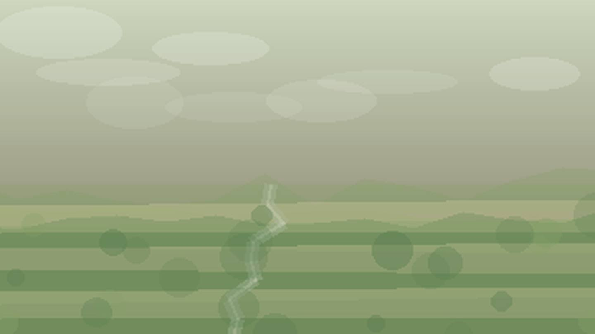

Главная / Кировская область

Кировская область
Что посадить
Что посадить
в Кировской области
Выберите природную зону в Кировской области: условия внутри региона различаются по теплу, влаге, ветру и длине сезона.
северная зона: короткий сезон и прохладное лето требуют ранних сортов, укрытий и самых устойчивых культур. Ориентиры внутри зоны: Луза, Мураши.
Открыть страницу зоны → центральная зонацентральная зона: прохладная лесная зона подходит для базового огорода, ягодников и устойчивого сада. Ориентиры внутри зоны: Киров, Слободской.
Открыть страницу зоны → южная зонаюжная зона: тёплая степная зона сильна для овощей, бахчевых и сада при контроле влаги. Ориентиры внутри зоны: Вятские Поляны, Уржум.
Открыть страницу зоны →